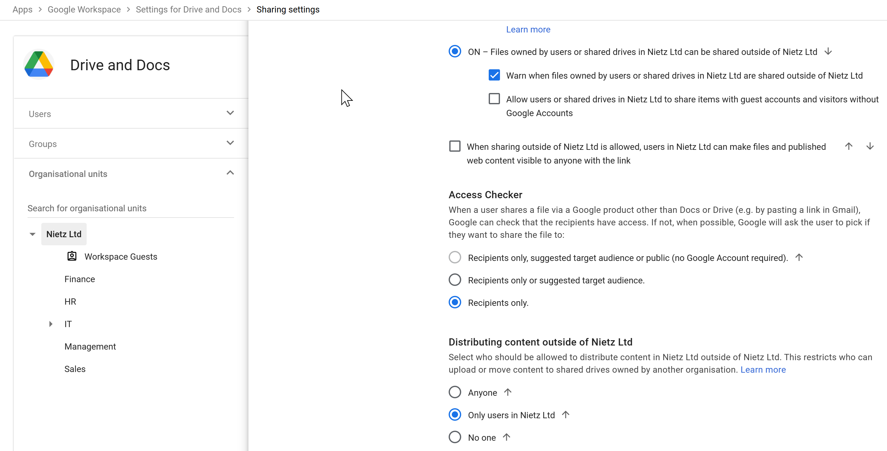

Overview
Google Drive was configured to enable secure collaboration while preventing uncontrolled data exposure both internally and externally.
Key concept:
File sharing is one of the biggest data leakage risks — controls must balance usability and security.
File sharing is one of the biggest data leakage risks — controls must balance usability and security.
Drive Sharing Settings

Drive sharing configuration
Configuration
- External sharing: Enabled (controlled)
- Warning on external sharing: Enabled
- Non-Google account sharing: Disabled
- Public link sharing: Disabled
- Access checker: Recipients only
- External content distribution: Restricted to internal users
Why this matters:
Prevents accidental public exposure of files while still allowing controlled collaboration with external partners.
Prevents accidental public exposure of files while still allowing controlled collaboration with external partners.
Security Impact
- Stops “Anyone with the link” data leaks
- Prevents anonymous access to company files
- Forces intentional sharing decisions
Shared Drives

Shared Drives for team collaboration
Shared Drives were implemented to ensure files are owned by the organisation rather than individual users.
Benefits
- Files remain accessible when users leave
- Centralised management of team data
- Improved collaboration within departments
This aligns with real-world business requirements where data ownership must
not depend on individual accounts.
Permission Management

Group-based permission management
Access to Drive files and Shared Drives was controlled using Google Groups.
Approach
- Permissions assigned to groups (not individuals)
- Department-based access (HR, IT, Finance, etc.)
- Consistent access control across resources
Why this matters:
Group-based permissions scale easily and reduce administrative overhead.
Group-based permissions scale easily and reduce administrative overhead.
Security Impact
- Prevents permission sprawl
- Reduces risk of misconfigured access
- Simplifies onboarding and offboarding
Design Approach
- Least privilege access model
- Group-based access control
- Controlled external collaboration
- No public link sharing
This approach balances usability with strong data protection controls.
Summary
- Secure Drive sharing configuration implemented
- External sharing controlled and monitored
- Shared Drives used for organisational ownership
- Permissions managed using groups
This configuration significantly reduces the risk of data leakage while
maintaining effective collaboration.